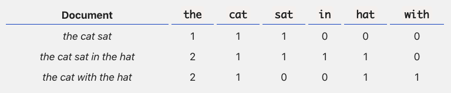

Aula 5
Aprendizado supervisionado: text as data
Introdução
Nesta aula, aplicaremos aprendizado supervisionado para resolver problemas em um dos tipos mais complexos de dado: textos. Em particular, textos são difíceis de serem estudados porque são hiperdimensionais, não-estruturados e, geralmente, volumosos.
A parte mais importante da aula de hoje consistirá em aprender os principais procedimentos sobre pré-processamento de texto para, então, adaptarmos o workflow que já vimos nas aulas anteriores para classificar discursos presidenciais.
Bag of Words
Como em qualquer problema em aprendizado de máquina, texto e outras fontes de dados não-estraturadas precisas ser convertidas para números para podermos aplicar algoritmos e pipelines. Há algumas opções mais utilizadas: transformar texto em vetores (word embbedings), algo cada vez mais comum; transformar textos em bag of words (ou bag of n-grams). Bag of words tem a vantagem de ser uma representação simples e que, por resultar em um formato tabular convencional, pode ser utilizado em vários algoritmos.
Resumidamente, bag of words funciona da seguinte forma: listamos todas as (ou um sub-conjunto das) palavras contidas em todos os textos ou documentos que queremos analisar e, para cada texto ou documento, contamos quantas vezes cada uma aparece. O resultado é algo mais ou menos assim:

O grande problema aqui é que, a depender da quantia de textos e dos seus tamanhos, extrapolamos facilmente dezenas de milhares de palavras se formos contabilizar todas – e, ainda assim, a maioria delas vai aparecer em apenas um ou outro documento, criando o que chamamos de matriz esparsa1 Precisamos, portanto, de alternativas.
1 Vale notar, também, que bag of words ignora a posição em que palavras ocorrem, o que pode ser importante em algumas aplicações.
Pré-processamento
A solução tradicional em aprendizado de máquina para o problema do bag of words é criar matrizes menores fazendo a seleção ativa de apenas algumas palavras para contar. Há várias formas de se fazer isso e, no geral, não há certo ou errado. Para tentar ser mais exaustivo, seguem critérios utizados em pré-processamento de texto:
Removação de números e/ou caracteres especiais (caso não sejam informativos para determinado contexto);
Remoção de stopwords, isto é, palavras que não são consideradas informativas para um determinado problema (e.g., artigos, pronomes, etc.);
Normalização do texto (e.g., lowercase, trimming);
Stemming (também lematização) (e.g., reduzir palavras às suas raízes, como em
radical*idadeeradical*ização);Junção de palavras por similaridade textual (e.g., distância de Jaccard e etc.);
Remover palavras com mais ou menos que um determinado número de caracteres;
Remover palavras que ocorrem pouco a) absolutamente, b) relativamente (por proporção, ou quantil); c) por número de documentos únicos em que aparecem;
Remover palavras indicadoras de contexto (e.g., o nome do autor ou autora de determinado texto);
Entre outros.
Cada uma destas decisões têm impactos diferentes sobre o conjunto final de features utilizados para resolver um problema. De forma geral, no entanto, o importante é sempre mirar no seguinte, via tentativa e erro, para chegar em uma solução adequada: 1) selecionar o mínimo possível de palavras (para sermos eficientes computacionalmente) que discriminem bem valores do nosso target.
Em análise de texto, feature selection é algo essencial, diferentemente das aplicações que vimos até agora
Implementação
Em R, existem alguns frameworks mais bem integrados para análise de texto, mas o próprio mlr3 não oferece suporte específico a essa tarefa. Por essa razão, usaremos uma combinação de duas ferramentas: quanteda e mlr3. Para instalar o primeiro, use:
install.packages("quanteda")A partir daí, supondo que temos uma base de textos já carregada chamada df, precisamos seguir três etapas para criar um bag of words: criar um corpus; tokenizar os textos, isto é, separar as palavras; criar um dfm (document-feature matrix) e selecionar as features desejadas:
library(quanteda)
# 1) Cria um corpus
cps <- corpus(df, docid_field = "id", text_field = "textos")
# 2) Tokenizacao
tks <- cps %>%
tokens(remove_punct = TRUE, remove_numbers = TRUE) %>%
tokens_tolower() %>%
tokens_remove(min_nchar = 5, pattern = stopwords("pt"))
# 3) Criacao de uma matriz bag-of-words
tks_dfm <- dfm(tks) %>%
dfm_trim(min_docfreq = 5)
# Etapa final) Transformar o resultado para tibble para o mlr3
tks_dfm <- tks_dfm %>%
as.matrix() %>%
as_tibble()Em Python, esse processo todo é facilitado pela library sklearn. Com ela, já é possível passar uma lista de textos diretamente para o método fit_transform da função CountVectorizer:
from sklearn.feature_extraction.text import CountVectorizer
vct = CountVectorizer(analyzer='word', ngram_range=(1, 2), min_df=0.1)
X = vectorizer.fit_transform(X)CountVectorizer não é tão flexível quanto toda a suíte do quanteda, mas Python fornece diversas outras ferramentas para pré-processar textos – inclusive muito mais rápidas.
Aplicando features
Quando criamos uma bag of words para treinar um modelo, precisamos usar as mesmas features que encontramos ali para fazer predição em unseen data. Podemos fazer isso em R ou Python com:
# Tokeniza um corpus com textos nao usados para treino
teste_tks_dfm <- corpus(teste, docid_field = "id", text_field = "textos") %>%
tokens(remove_punct = TRUE, remove_numbers = TRUE) %>%
tokens_tolower() %>%
tokens_remove(min_nchar = 5, pattern = stopwords("pt")) %>%
dfm() %>%
dfm_match(featnames(tks_dfm))Y = vct.transform(Y)Fica evidente por esse exemplo como sklearn torna o processo muito mais simples.
Normalização
Muitas vezes, bag of words acabam contendo palavras que ocorrem com muita frequência em vários documentos que não são informativas – pense em termos como empresa em documentos corporativos, ou partido em discursos de políticos.
Nestes casos, pode ser útil podenderar o peso das ocorrências de uma palavra pela frequência em que ela aparece em todos os documentos – e aí temos outra medida, TF-IDF.
A ideia, com isso, é a seguinte: se uma palavra aparece bastante em poucos documentos, provavelmente ela é informativa de alguma similaridade entre eles; ao contrário, se uma palavra aparece pouco ou muito em todos os documentos, possivelmente ela não é informativa.
Para implementar TF-IDF, podemos usar:
dfm_tfidf(tks_dfm)from sklearn.feature_extraction.text import TfidfVectorizer
vct = TfidfVectorizer()
X = vectorizer.fit_transform(X)Matrizes esparsas
Por definição, matrizes esparsas contém muitos elementos sem nenhuma informação – e é geralmente isso o que ocorre quando usamos bag of words, especialmente quando são analisados textos muito pequenos. A consequência prática é que muitos algoritmos não lidam bem com estruturas esparsas, falhando em convergir ou em otimizar coeficientes.
Uma boa forma de identificar uma matriz esparsa é contar a proporção de zeros em relação ao total de elementos. Em problemas que usam dados em format ode bag of words, facilmente essa métrica passa de 95%.
Portanto, quando for escolher algoritmos para lidar com problemas que envolvem texto2, considere opções que lidam bem com matrizes esparsas, como naive bayes, KNN, árvores de decisão ou regressões logísticas (lineares com regularização também são boas opções).
2 Vamos estudar apenas classificação, mas é possível gerar features a partir de texto para resolver problemas de regressão.
Pipelines
Pré-processamento é parte integrante de uma pipeline porque, ao alterar features utilizadas – ou seus valores, como quando usamos TF-IDF –, o algoritmo e hiper-parâmetros mais adequado para resolver um dado problema pode mudar. É por isso que, em geral, pré-processamento é otimizado em conjunto com outras decisões.
Para facilitar algumas coisas, poderemos utilizar algumas ferramentas que nos ajudarão a manejar pipelines um pouco mais complexas. Em R, temos como comparar vários modelos simultaneamente com:
# Cria um grid para comparar modelos
design <- benchmark_grid(
tasks = tsk,
learners = lrns(c("classif.naive_bayes", "classif.kknn"), predict_sets = "test"),
resamplings = rsmps("holdout", ratio = 0.7)
)
resultados <- benchmark(design)
resultados$score(msr("classif.fbeta"))Já em Python, uma ferramenta útil é a função Pipeline:
from sklearn.pipeline import Pipeline
from sklearn.naive_bayes import GaussianNB
pipe = Pipeline([('texto', CountVectorizer()), ('nb', GaussianNB())])
pipe.fit(X_train, Y_train)Algo importante a notar: a depender do pré-processamento utilizado, como o uso de TF-IDF ou remoção de palavras que ocorrem em poucos documentos, a separação das amostras em treino e teste pode afetar o resultado obtido. Por quê? Se usarmos uma amostra completa para selecionar features, estaremos introduzindo dados que os modelos que serão treinados não deveriam acessar. Algumas pessoas chamam isso de data leaks.
Pré-processamento deve ser sempre feito antes de introduzirmos uma estratégia de validação